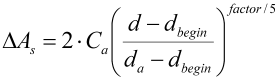
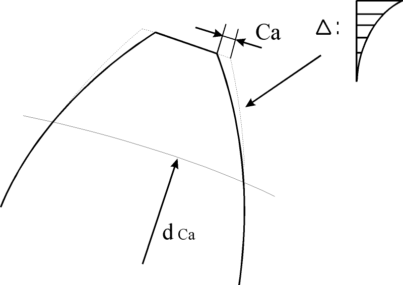

|
|
|


渐增齿廓修形
在渐增齿廓修形中，齿厚从起始直径到齿顶逐渐减小（每个齿面上的修形量 Ca 作为齿厚修形），按照
 | (14.21) |
该系数控制修形的走向。系数为 5 表示线性修形。有关更多信息，另请参见图 14.44。如果使用大于 5 的系数，渐增齿廓修形会切向过渡到未修形的齿面。如果要实现较大的修形量，这是首选方案。我们不建议使用小于 5 的系数（其中一些较小的值会被程序直接忽略）。大于 20 的系数也会被忽略。在这种情况下，使用系数 20。

图 15.79：渐增齿廓修形
Progressive profile modification
In a progressive profile modification, the tooth thickness is reduced from a starting diameter to the tip (relief Ca on each flank as a tooth thickness modification) in accordance with
(14.21) |
. The coefficient controls the course of the relief. A coefficient of 5 represents a linear relief. For more information, see also Figure 14.44. If a coefficient greater than 5 is used, the progressive profile modification moves tangentially into the unmodified tooth flank. This is the preferred option if larger reliefs are to be achieved. We do not recommend you use a coefficient of less than 5 (some of these lower values are simply ignored by the program). Coefficients greater than 20 are also ignored. In this case, a coefficient of 20 is used.
Figure 15.79: Progressive profile modification